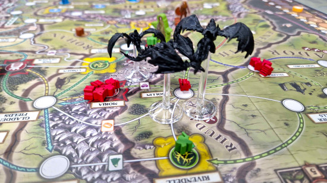

Tvůrce populární kooperativní hry Pandemic, Matt Leacock, ohlásil novou deskovou hru nazvanou „Fate of the Fellowship“, která je zasazená do světa Pána prstenů. Hra je navržena pro 1 až 5 hráčů a kombinuje strategii s tématem Tolkienovy Středozemě.
Hráči převezmou role hrdinů z Pána prstenů a budou spolupracovat, aby chránili útočiště Středozemě a zároveň pomohli Frodovi uniknout před Nazgûly na cestě k Hoře osudu. Hra klade důraz na kooperaci, sedlá dobrodružství i strategické rozhodování.
Součástí balení je realistická replika Barad-dûru ve formě kostkové věže dlouhé přibližně 28 cm, která slouží jako vizuálně výrazný prvek a herní komponenta. Dále je v sadě 13 hratelných postav, 14 karet událostí a 24 úkolů, které přidávají hlubší příběhový rozměr.
Leacock uvedl, že návrh vznikl zpětně - jeho cesta u Pandemicu začala díky hře Pán prstenů, kterou hrál už v roce 2000. Pro něj je tato novinka symbolickým návratem a uzavřením kruhu.
Vydání hry je plánováno na léto 2025. Mezitím Leacock slibuje pravidelné designové deníky a exkluzivní ukázky z vývoje, které nabídnou pohled do tvůrčího procesu.